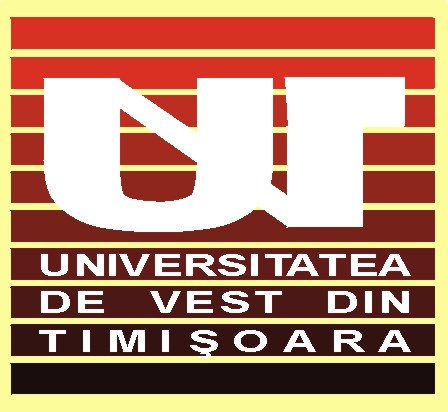
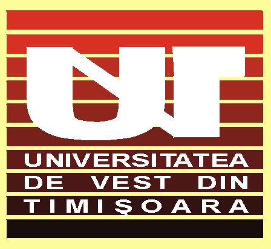

 Program
Projects
Participants
History
General / Travel
Pictures
Sponsors
Contact Info
Program
This page contains the overview of the program of SSIP
2003. It might suffer minor changes depending on the lectures to be held
each morning!
Thursday, July 3
| 17:00 - 18:00 |
Opening at the Faculty of Mathematics and CS. SSIP: from 1993 to 2003 - Attila Kuba |
| 18:00 - 18:15 |
Break |
| 18:15 - 19:30 |
Projects description |
Friday, July 4
| 9:00-11:00 | Lecture:
Smoothing Techniques in Image Processing - Vasile Gui |
| 11:00-11:30 | Coffee break |
| 11:30-13:00 | Teams formation |
| 13:00-15:00 | Lunch break |
| 15:00-no longer than 22:00 |
Computer laboratory team work |
Saturday, July 5
| 9:00-10:00 | Lecture:
Histograms and their Applications in Image Processing (I) - Attila
Kuba |
| 10:00-10:30 | Coffee break |
| 10:30-12:00 | Lecture: Histograms and their Applications in Image
Processing (II) - Attila Kuba |
| 12:00-15:00 | Lunch break |
| 15:00-no longer than 22:00 |
Computer laboratory team work |
Sunday, July 6
| 8:00-20:00 | Excursion (to the Iron Gates on the Danube!) |
Monday, July 7
| 9:00-10:30 | Lecture: Finding patterns , Template matching , Edge detection, Corner detection -
Dmitry Chetverikov |
| 10:30-11:00 | Coffee break |
| 11:00-12:30 | Lecture: 2D Shape Analysis
- Dmitry Chetverikov |
| 12:30-15:00 | Lunch break |
| 15:00-no longer than 22:00 |
Computer laboratory team work |
Tuesday, July 8
| 9:00-9:50 | Lecture:
Medical Image Processing and Finite Element Analysis -
András Hajdu |
| 9:50-10:10 | Coffee break |
| 10:10-11:00 | Lecture: Multi-modal Human-Computer Interaction -
Attila Fazekas |
| 11:00-11:30 | Coffee break |
| 11:30-12:30 | Lecture:
Implementation of an Outdoor Shooting Game - Laszlo Szirmay-Kalos |
| 12:30-15:00 | Lunch break |
| 15:00-no longer than 22:00 |
Computer laboratory team work |
Wednesday, July 9
| 9:00-11:00 | Lecture: On Mathematical
Morphology - Allan Hanbury |
| 11:00-11:30 | Coffee break |
| 11:30-12:30 | Lecture:
Skeleton Extraction from Binary Images - Kalman Palagyi |
| 12:30-15:00 | Lunch break |
| 15:00-no longer than 22:00 |
Computer laboratory team work |
Thursday, July 10
| 9:00-10:00 | Lecture: Colour Image
Processing - Allan Hanbury |
| 10:00-10:30 | Coffee break |
| 10:30-12:30 | Lecture: The
Analysis Temporal Series, Data Reduction and Image Vision - Andrew
Todd-Pokropek |
| Extra Questions Andrew Todd-Pokropek | |
| 12:30-15:00 | Lunch break |
| 15:00-no longer than 22:00 |
Last minute changes to the project presentations for the next day! ;-) |
Friday, July 11
| 9:00-10:00 | Student talks |
| |
Janos Farkas - Digital Thin Section Analysis |
| |
Lajos Rodek, Zoltan Kiss - Reconstruction of objects containing cross-circular sections |
| |
Ovidiu Ciobanu - Virtual Reality Assisted Treatment Planing for Dental Implants |
| 10:00-11:00 | Test |
| 11:00-13:00 | Last minute changes to the project presentations for the next day! ;-) |
| 13:00-14:00 | Lunch break |
| 14:00-no longer than 19:00 |
Presentation of Projects |
| 20:00-not too long! ;-) |
Dinner |
Saturday, July 12
| 9:00-10:00 | Competition results and closing ceremony |
Last Modified Monday, June 02, 2003 22:56:47 EET